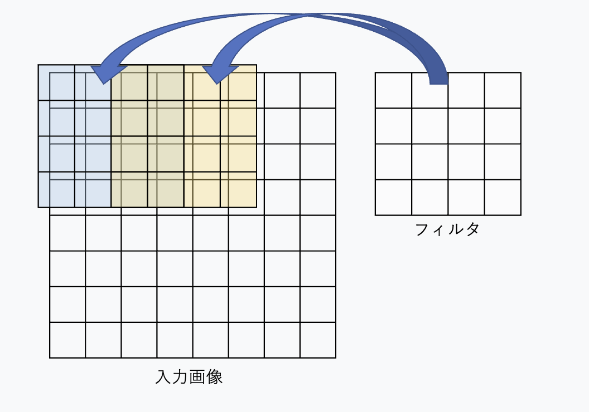

CNNをちゃんとまとめたい
2025年7月5日
概要
CNN(畳み込み=Convolutional ニューラルネットワーク)は画像処理の分野なんかでは今でもスタメン級の仕組みで、結構どの深層学習系の参考書でも基本的な仕組みとして紹介されがちですがやはり色々工夫がされているものだなあと。 世の中には色々なモデルがあるのでどれもバッチリ理解しようと思うと(一応基礎教養的なレベルのモデルは記事にしたいとは思ってますが) 時間も脳のメモリも足りなそうだと感じてしまいます。 機械学習 / 深層学習系の界隈に長くいると既存のモデルからの差分で新しいモデルはすっと理解できがちなようなのですが、ひよっこからすると 勉強しないといけないことがめちゃめちゃ多く見えてしまってどうも参ってしまいます...
以下では大抵Oreillyの「ゼロから作るDeep Learning」およびMLPシリーズの「深層学習」を参考にしています。
CNNはどこが一味違うのか
CNNはいわゆる順伝播型NNに分類されるモデルですが、では全結合型のNNとは何が違うのでしょうか。 図で表すと以下のような感じです。
(i)が全結合層を表していて、(ii)が畳み込み層(とプーリング層というもの)を簡略化して表したものとなります。 左側の図は矢印が多くてもしかしたらちょっと引き忘れているかもしれませんが。 この図を見ると全結合というものは入力の情報全部がそれぞれのユニットに伝わっていて、それに対して畳み込み層は 入力の情報の一部だけが各ユニットに伝わっているんだなあということがわかります。
この仕組みの嬉しさは、構造的な情報を保持しておけるという点にあります。 グレースケールの(1チャンネルの)縦28px, 横28pxの画像を全結合層に投げようと思うと、 元の画像は(1, 28, 28)という形ですがそれを一列に並べた784個のデータを渡すことになります。 この時点で元の画像の「どの部分に」どのような情報が載っていたのかという情報は失われてしまうことになります。
それに対してCNNはフィルタというものを使うことで入力を一部分ずつ処理していく(実装的には同時に行列計算されますが)ことができるので、 情報の位置関係的な情報を一定保持しておけるわけです。
CNNといえば画像処理、といったイメージがありがちですが、これは画像のような情報は近い位置に似た情報が載っていることが多いので この畳み込みとの相性がいいからです。
畳み込み
畳み込みという仕組みを詳しく見ていきたいです。この畳み込みという単語は信号処理の分野由来の単語のようです。
グレースケールのサイズ\(W \times H\)の画像に対して、サイズ\(W_f \times H_f\)のフィルタ\(h_{pq}\)を適用することを考えます。 このとき行われる画像の畳み込みは以下のように定義されます。入力画像の画素を\(x_{ij}\)として表しています。 \[ u_{ij} = \sum_{p=0}^{W_f-1} \sum_{q=0}^{H_f-1} x_{i+p, j+q} h_{pq} \]
これはアダマール積の総和を計算しているだけになります。 ちなみに信号処理分野でいう畳み込みは \[ u_{ij} = \sum_{p=0}^{W_f-1} \sum_{q=0}^{H_f-1} x_{i-p, j-q} h_{pq} \] と定義をするようで、フィルタが上下左右に反転されるようになるわけですが、本質的には同じなのでこのように慣用的に定義されているようです。
この畳み込みフィルタをどれくらいの間隔で適用するかを"ストライド"と呼びます。 ここまでの説明を簡略化したのが以下の図になります。
ここでは8\(\times\)8サイズの画像に対して4\(\times\)4サイズのフィルタをストライド2で適用した例を示しています。 また、この図のようにフィルタを適用していくことを考えると端っこにはそうでない部分と同じようにはフィルタが適用できない ということになってしまう(はみ出ちゃうので)ということで、画像の縦横になんらかを補う操作を"padding"と呼びます。 単純に値0によって埋めることも多いようでそれを特に"zero-padding"と呼ぶようです。このpaddingの手法は明確にどの手法がいい、ということは言いづらいようで色々な手法が存在してはいるようですがここでは割愛します。
実装ベースの工夫
ここまでの話は画像のチャンネル方向の次元が1の方が図示などをしやすく想像もしやすいのでグレースケールの画像を例に挙げていましたが、
RGBのように三次元のチャンネルを持っている問題を扱うことが一般的かもしれません。また画像処理以外の場面ではその状況に応じてチャンネル方向の次元は変化するでしょう。
また、このニューラルネットを流れる情報の次元の方向としてもう一つあるのがバッチ数です。これは画像を例に簡単にいうと、何枚の画像を同時に処理するのか、ということです。
さて、これを踏まえるとなかなか全結合よりは実装が大変そうに見えますが、ここは" image to column"というトリックを使って解決されることが多いようです。
全結合レイヤーの計算を行う際は、先述の通り例えば28\(\times\)28の画像は1\(\times\)784のベクトルに潰してから計算されるわけでした。
畳み込み層において一列のベクトルに潰すという操作は行われます。
特に、アダマール積の総和を求めたいということを考えると入力画像もフィルターもうまく一列に潰して内積計算に書き換えると効率が良さそうであることが想像できます。
ゼロつく①で提供されているim2col関数を参考に以下では話を進めます。
import numpy as np
def im2col(input_data, filter_h, filter_w, stride=1, pad=0):
N, C, H, W = input_data.shape
out_h = (H + 2*pad - filter_h)//stride + 1
out_w = (W + 2*pad - filter_w)//stride + 1
img = np.pad(input_data, [(0,0), (0,0), (pad, pad), (pad, pad)], 'constant')
col = np.zeros((N, C, filter_h, filter_w, out_h, out_w))
for y in range(filter_h):
y_max = y + stride*out_h
for x in range(filter_w):
x_max = x + stride*out_w
col[:, :, y, x, :, :] = img[:, :, y:y_max:stride, x:x_max:stride]
col = col.transpose(0, 4, 5, 1, 2, 3).reshape(N*out_h*out_w, -1)
return col
img = np.array([
[ # 1つ目の画像 (N=0)
[[ 1, 2, 3, 4], # チャンネル0
[ 5, 6, 7, 8],
[ 9, 10, 11, 12],
[13, 14, 15, 16]],
[[17, 18, 19, 20], # チャンネル1
[21, 22, 23, 24],
[25, 26, 27, 28],
[29, 30, 31, 32]],
[[33, 34, 35, 36], # チャンネル2
[37, 38, 39, 40],
[41, 42, 43, 44],
[45, 46, 47, 48]]
],
[ # 2つ目の画像 (N=1)
[[49, 50, 51, 52],
[53, 54, 55, 56],
[57, 58, 59, 60],
[61, 62, 63, 64]],
[[65, 66, 67, 68],
[69, 70, 71, 72],
[73, 74, 75, 76],
[77, 78, 79, 80]],
[[81, 82, 83, 84],
[85, 86, 87, 88],
[89, 90, 91, 92],
[93, 94, 95, 96]]
]
])
print("入力shape:", img.shape)
col = im2col(img, filter_h=2, filter_w=2, stride=1, pad=0)
print("im2col出力shape:", col.shape)
print("im2col出力:")
print(col)
関数の実装を見て、なるほど !となるのは僕は少なくとも難しかったので、とりあえずイマイチな人はこれを実際に入力を変えて見ながら動かしてみるとピンとくるかもしれません。 が、要は以下の図のようなことをしています。図は上のコードで与えた入力に対応しています。
これを各フィルターのスコープごとに行って、フィルターの行列を潰したベクトルとの内積を計算することで簡単に畳み込み層の計算ができるようになります。 実装ベースの話でいくとこれをまた画像の形に戻したりなど色々なステップがあるのでまた実装編ということで記事を書きたいのですが、どうせならKaggleのコンペになんか出すのを目指したいなあと。
Pooling
CNNアーキテクチャで解説すべきところは大まかには残すところPooling層のみです。PoolingはCNN特有というわけではなく、 要は色々抽出してきた特徴をうまく圧縮したい、という時に噛まされる層で、メジャーなものとしてはMax PoolingとAverage Poolingがあたりでしょうか。 Max Poolingはその名の通りある範囲の中の最大値にその範囲を代表させるというもので、Average Poolingはその範囲の平均値にその範囲を代表させるというものです。 Poolingの手法選びのポイントとしては、情報が奇抜なもの揃いであればAverageをとるとピーキーな部分が失われてしまいそうな感じがするので Max Poolingの方がいいかもしれませんし、情報がある程度均一に分布しているのであればAverage Poolingの方がいいかもしれません。 この層の細かな説明もあるといえばあるのでしょうが記事がなかなか長くなってきてしまったので実装編に委ねたいところです。
まとめ
CNNアーキテクチャを大まかにさらってみました。実装してみるとまだ分かってなかったなあという点が見つかってくるとは思うのですが、 有名どころのモデルはこの程度\(+\alpha\)の詳しさでは少なくともそれぞれ理解しておきたいなあと思っています。 ひとまずCNN編は、自分でなんらか実装してみて記事にするのと、名前がついている有名なアーキテクチャをそれぞれ理解してみるというのが目先の目標になりそう。